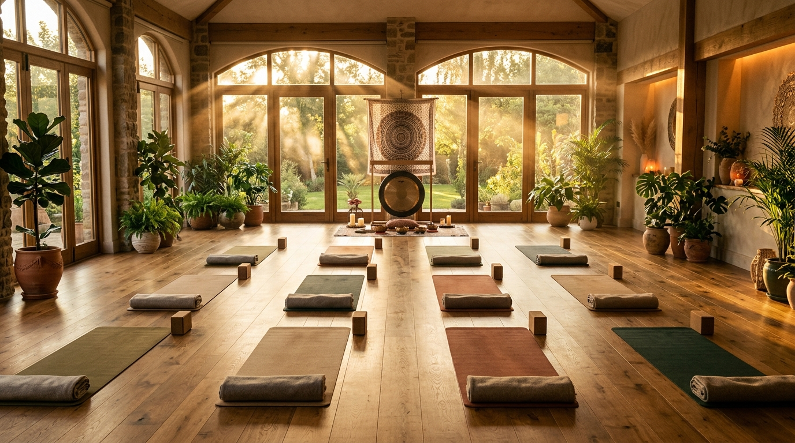

“Mình tập chưa giỏi, sao dám đi dạy?”
HLV giỏi không phải là người làm được tư thế khó nhất. Bạn cần hiểu cơ thể, định tuyến an toàn và biết cách biến kiến thức thành hướng dẫn dễ hiểu cho học viên.
Hành trình chuyển hóa từ người tập thành người có thể đứng lớp tự tin, hiểu cơ thể và truyền đạt Yoga một cách an toàn. Lộ trình linh hoạt kết hợp học Online qua Zoom và thực hành Offline tại Đà Lạt hoặc Hội An.

Điều quan trọng hơn là hiểu cơ thể, biết cách giữ học viên an toàn và có phương pháp truyền đạt đủ rõ để người khác tiến bộ.
HLV giỏi không phải là người làm được tư thế khó nhất. Bạn cần hiểu cơ thể, định tuyến an toàn và biết cách biến kiến thức thành hướng dẫn dễ hiểu cho học viên.
Bạn sẽ học giải phẫu theo hướng ứng dụng: quan sát cơ thể, hiểu khớp – cơ – cột sống và nhận diện những lỗi thường gặp ngay trên thảm.
Khẩu lệnh, giọng nói, sequencing và practicum được luyện liên tục để bạn không chỉ “biết Yoga”, mà còn biết cách dẫn dắt một lớp học thực sự.
Từ nền tảng Asana, giải phẫu và triết lý đến kỹ năng đứng lớp, mỗi module đều hướng về một mục tiêu: giúp bạn đủ hiểu để dạy an toàn và đủ thực hành để dạy tự tin.

Khóa học không tách lý thuyết khỏi thực hành. Mỗi kiến thức về định tuyến, cơ sinh học hay sequencing đều được nối trực tiếp với tình huống đứng lớp và khả năng quan sát học viên.
Phân tích sâu 90+ tư thế Hatha Yoga nền tảng và hiểu cách đặt cơ thể để khớp vận động an toàn hơn.
Hiểu cơ, xương, khớp và chuyển động để thay thế cách dạy theo cảm tính bằng tư duy cơ sinh học.
Học cách xây một bài tập có logic và dùng giọng nói để lớp học hiểu, theo kịp và cảm thấy được dẫn dắt.
Trở về nền tảng của Yoga để hiểu nghề giáo viên không chỉ là hướng dẫn động tác mà còn là trách nhiệm và cách sống.
Bạn trực tiếp xây giáo án, đứng dạy và nhận phản hồi chi tiết để biến kiến thức thành năng lực thực tế.
Mô hình kết hợp giúp giảm áp lực di chuyển nhưng vẫn dành đủ thời lượng trực tiếp cho những kỹ năng cần quan sát và chỉnh sửa tại chỗ.
Lý thuyết, giải phẫu, triết lý và phân tích định tuyến được học trực tiếp qua Zoom để bạn có thể theo học từ nơi mình đang sống.
Giai đoạn trực tiếp tập trung vào hands-on, thực hành đứng lớp, quan sát cơ thể và nghiệm thu kỹ năng với giảng viên.

Giảng viên Chuyên môn · E-RYT 500H
Mây hiện trực tiếp phụ trách các học phần Giải Phẫu Học Ứng Dụng và Kỹ Năng Sư Phạm tại Giang Metta Yoga Academy (RYS).
Mục tiêu của khóa học không dừng ở một tấm chứng chỉ. Bạn cần có nền tảng đủ vững để xử lý lớp học thật, tiếp tục tự học và phát triển nghề nghiệp sau khi tốt nghiệp.
Đọc thêm câu chuyện của Mây →Nhắn cho Mây để nhận lịch khai giảng gần nhất, học phí chi tiết và tư vấn lộ trình học phù hợp với quỹ thời gian hiện tại của bạn.
Chat Zalo nhận thông tin & tư vấn